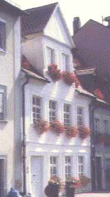
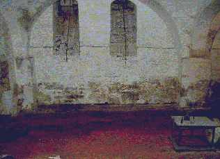

Inhaltsverzeichnis - Sitemap - über 1.500 Druckseiten unabhängige Bauinformationen
e-freetranslation - Online-Translator in many languages
Alles auf CD +++ Bauberatung für Jedermann
Kostengünstiges Instandsetzen von Burgen, Schlössern, Herrenhäusern, Villen - Ratgeber zu Kauf, Finanzierung, Planung (PDF eBook)
Altbauten kostengünstig sanieren: Heiße Tipps gegen Sanierpfusch im bestimmt frechsten Baubuch aller Zeiten (PDF eBook + Druckversion)

Sanierputz - Was kann er, was nicht? 5
 Inhaltsübersicht (Bild links: Doppelter Sanierputzschaden):
Inhaltsübersicht (Bild links: Doppelter Sanierputzschaden):Seite 1 - Sanierputz - Was kann er, was nicht? Heilt er?
2 Sanierputze am Altbau: 1. Was sind Sanierputze? 2. Was bringen Salzanalysen? 3. Nehmen Sanierputzporen Salz auf?
3 Sanierputze am Altbau: 4. Begünstigen Sanierputze die Austrocknung des Mauerwerwerks? 5. Entsprechen die Sanierputze gem. WTA dem WTA-Merkblatt 2-2-91, Sanierputze?
4 Sanierputze am Altbau: 6. Vermindern Sanierputze die Salzbelastung? 7. Welche Anstriche sind auf Sanierputzen geeignet?
5 Gewährleistung, abplatzende Sanierputzschollen, Landkarten-Putzrisse und Ettringgittreiben / Treibmineralien
6 Bauschaden duch Sanierputzversagen auf feuchtem und salzigem Untergrund - Gutachtenauszug 1 - Vorbemerkung und Schadensanalyse
8 Gutachtenauszug 3 - Sanierputz - ein Opferputz-System?
9 Gutachtenauszug 4 - Sanierputz-Risse
10 Gutachtenauszug 5 - Feuchtemessung
11 Gutachtenauszug 6 - Sanierungsempfehlung
Gewährleistung, abplatzende Sanierputzschollen, Landkarten-Putzrisse und Ettringgittreiben / Treibmineralien
Tip: Machen Sie Ihrem Planer von Anfang an klar, daß er mit seinem hochhydraulischen Sanierputz auf die mit "aufsteigender Feuchte" fehldiagnostizierten Wände, Sockelmauerwerke und Kellerfundamente nicht landen kann. Sonst sitzt er mit seiner 5jährigen Gewährleistung schnell als Einziger da, wenn es um die auf- und abgeplatzten Sanierputzschollen geht. Die Putzer und Hersteller haben hier nämlich grundsätzlich alle Tricks drauf - im Unterschied zur Planungslusche zu Honorarzone 0 Mindestsatz. Und nicht immer haben die weithergereisten "Sanierexperten/Denkmalpflegespezialisten" so viel Glück wie bei der in die Hose gegangenen Sanierverputzerei eines renommierten Berliner Museums. Dort haben die beteiligten selbstständigen und beamteten Planungshanseln wie wohl so oft ein VOB- und haushaltsrechtswidriges produktmanipuliertes Sanier-Leistungsverzeichnis (Erkennungszeichen: "Produkt XY ... oder gleichwertig", Selbstsanierung inklusive, gelle?) in die Welt gesetzt und den dank vielerlei Vergünstigungen favorisierten Sanierputz WTA auch tatsächlich an zigtausende Wandquadratmeter gebracht. Kein Problem beim Staatlichen Auftraggeber und seinem staatlichen Hochbauamt, oder? Doch es dauerte nur wenige Wochen, dann stand die Chose hohl und in typischen Landkartenformen wg. nicht in den schwächelnden Untergrund eingebrachten Abbindespannungen des zementär-überharten Mörtels auch feste gerissen. Logisch.
Doch in diesem Fall gab der Produzent mal klein bei - man wollte sich seine Berliner Sauereien nicht versauen lassen, ein andermal hat man ja wieder mehr Glück - und bezahlte den Schaden und seine Reparatur - mit geeignetem Kalkmörtel. Das dazu geschlossene Geheimhaltungsabkommen mit den mitschuldigen Auftraggebern, die der Produzent auch ohne weiteres an den Pranger hätte stellen können - dem Vernehmen nach sehr einflußreiche Leute der hauptstädtischen Denkmal- und Beamtenszene - war jedenfalls nicht so viel wert, daß nicht auch etwas Geflüster auf dieser Seite landen hätte können. Details auf Anfrage.
Gerne treibt auch das Schadsalz bei frisch auf das salzbelastete Backsteinmauerk/Natursteinmauerwerk/Ziegelmauerwerk/Bruchsteinmauerwerk
als Putzgrund aufgebrachtem Sanierputz ganz schnell "Blüten" und blüht aus der neuen Sanierputzschicht aus
(Schadsalz-Ausblühung).
Grund: Die Trocknung des Frischmörtels gelingt wegen der gegebenen Bedingungen am Objekt (Schadsalzfracht,
Untergrund-Saugfähigkeit, Vornässverfahren, Klima) nicht schnell genug, die absperrende Porenhydrophobie / Wasserabweisung der
Sanierputzporen / Tensidporen bildet sich nicht schnell genug aus. So gelangt das Schadsalz (oft Mauersalpeter/Salpeter/Kalziumnitrat) aus
dem Untergrund in das Anmachwasser des Mörtels und wandert beim notgedrungenen Abtrocknen durch die ganze Putzschicht - durch keine
Hydrophobie behindert und ungebremst - an die Oberfläche. Um das zu verhindern, werden Bautrockner eingesetzt, die dann wiederum
die Gefahr bergen, daß der Putz zu schnell erhärtet und deswegen Blasen wirft, Hohlstellen bekommt, aufgrund der
Kerbspannungen bzw. Schwundkräfte reißt (Landkartenrisse!) und so früh wie möglich von der Wand abschert.
Das Wissen rund um die falschen Versprechungen und überraschenden Eigenschaften betr. Sanierputz ist also ein gutes Unterscheidungsmerkmal zur Beurteilung der Bauberatung aus diversen Quellen. Typischerweise ersetzt hier nämlich Marketinggetrommel der Bauchemie fundiertes Fachwissen. Man glaubt sich durch "Verschreiben wirksamer Medikamente" als Top-Experte auszuweisen, und ist doch nur den Baustoffkrämern aufgesessen.
Wie extrem selten sind doch erfrischend klare Aussagen von Herstellerseite wie H. G. Meier, Protagonist der deutschen Sanierputzproduktion in Oberfranken (Colfirmit Rajasil), in seinem Fachbuchschocker "Sanierputze" (expert verlag):
"Wird bei den Voruntersuchungen festgestellt, daß entweder Gipssteine oder gipshaltiger Mauermörtel oder beides zusammen eingesetzt worden sind, ... dann muß Sorge dafür getragen werden, daß zwischen zementhaltigem Putzsystem und dem gipshaltigen Untergrund keine Ettringitbildungen stattfinden, die zu Putzablösungen führen können. ...
Einige Hersteller bieten einen speziellen Spritzbewurfmörtel an, dessen Bindemittel eine hohe Sulfatbeständigkeit aufweist. ... Es besteht aber auch die Möglichkeit, den Grundputz bzw. den Sanierputz mit erhöht sulfatwiderstandsfähigen Zementen herzustellen. In allen Fällen muß aber beachtet werden, daß es sich immer nur um erhöht sulfatwiderstandsfähige Bindemittel handelt, eine absolute Sulfatbeständigkeit ist nicht gegeben. ... Ettringitbildung tritt ... nicht auf, wenn Putz und Putzgrund nicht langfristig durchfeuchten. ...
Der [auf Sulfat/Gips] frisch aufgebrachte zementhaltige Grundputz bzw. Sanierputz bewirkt die Bildung von Treibmineralien (Ettringit), was zu Zerstörungen des Putzes ... führt."
Leider fehlt es auch in Fachkreisen oft an Kenntnissen der fachlichen Grundlagen, sodaß im Tagesgeschäft gestreßte Bausäftl auch auf schädlichste Sanierschlechtachten hereinfallen. Und kann es überhaupt einen alten Putzgrund im kalkvermörtelten und -verputzten Bestand geben, in dem es keine Sulfate/Gipse gibt? Ich habe den jedenfalls noch nicht in freier Wildbahn angetroffen. Wie falsche Baustoffe über "Billigplanung" den Weg genau an Ihr Bauwerk finden, lernen Sie hier.

Barockfassade in reiner Kalktechnik - nach 8jähriger Standzeit Barockfassade
in reiner Kalktechnik nach 4jähriger Standzeit
Barockfassade
in reiner Kalktechnik nach 4jähriger Standzeit
 Detail
Detail
 Barocke Fachwerkfassade
in reiner Kalktechnik nach 4jähriger Standzeit
Barocke Fachwerkfassade
in reiner Kalktechnik nach 4jähriger Standzeit

Was wirklich gegen feuchte Wände hilft, finden Sie hier. Und gegen feuchtespeichernde Versalzung der Wand / des Mauerwerks / von Putz und Anstrichschichten hilft selbstverständlich - bei korrekter Diagnose und Analyse der Salzbelastung und Baustoffverträglichkeit/Baustoffeigenschaften nur die Entsalzung mit geeigneten - oft recht simplen und teils lediglich "mit hausfrautypischen Bordmitteln" des eigenleistenden Bauherren funktionierenden - Verfahren, die je nach Objektsituation und Schadsalzfracht mehr oder weniger schnell zum sicheren Erfolg führen. Das günstigste Entsalzungs- und damit auch - im Hinblick auf die hygroskopisch vom Schadsalz eingespeicherte Nässe - Entfeuchtungsverfahren kann übrigens an kleinen Testflächen erst mal ausprobiert werden. Es braucht also keine Gewaltanwendung mit teuerstem Spezial-Sanier-Putz auf zig Quadratmetern. Begleitmaßnahmen zur Beseitigung sonstiger Feuchtequellen aus unerwünschten Wasserzuflüssen und Raumluftfeuchte eben je nach dem.
Weiter: 6 Bauschaden duch Sanierputzversagen auf feuchtem und salzigem Untergrund - Gutachtenauszug - 1. Vorbemerkung und Schadensanalyse
Dieser Aufklärungs-Knüller hilft bestimmt etwas weiter:
Wissenschaftsbetrug der Bauchemie und Geräteindustrie, Geschäftemacherei der Planerluschen, Schlechtachter, Schwachverständigen sowie der Nepper, Schlepper, Bauernfänger und Handwerkspfuscher mit "Aufsteigender Feuchte (engl.: Rising Damp)", Ursachen und Sanierung feuchter Wände:
Jeff Howell: The Rising Damp Myth
(Rezension in Deutsch)
Sonstige Nützlichkeiten und andere Meinungen für feuchte, nasse, abgesoffene, verschimmelte, verpilzte und vermorschte Häuser - soweit es nicht um nutzlose Horizontalisolierung gegen "aufsteigende Feuchte" geht, der manche industrieabhängige bzw. ahnungslose Autoren (wer es ist, verrate ich nicht, ätsch!) - anhängen. Reihenfolge der Titel beinhaltet keinerlei Wertung!!!:
Altbau und Denkmalpflege Informationen Startseite